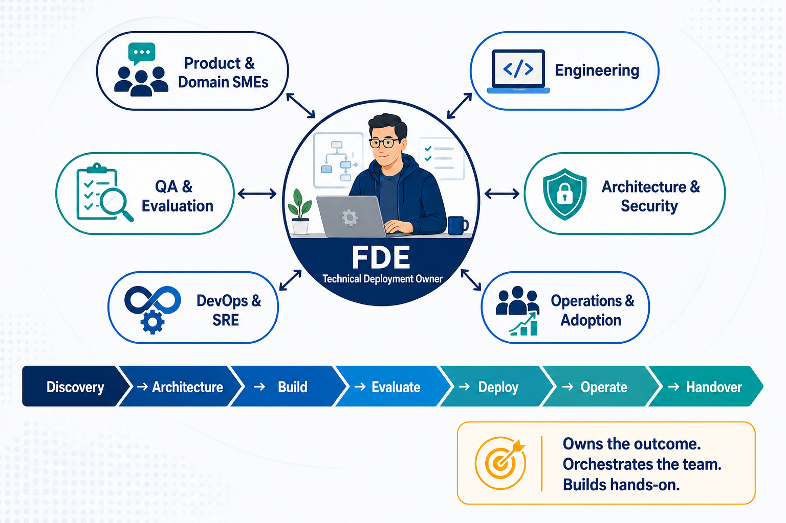
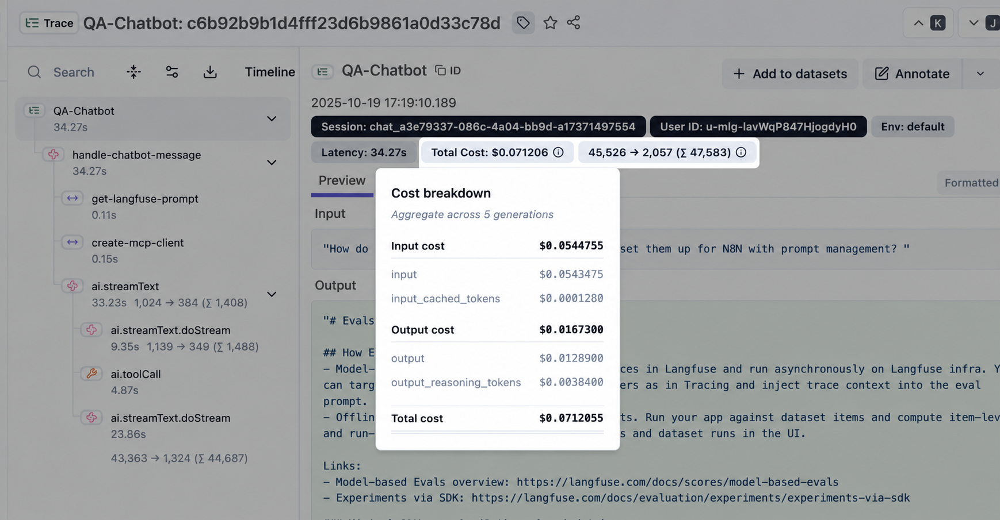

**LLM / RAG Fundamentals
[[Q]]Temperature 0 vs 1 — difference?[[/Q]] = 0: high-probability/deterministic choices; 1: more variation
[[Q]]Top-k[[/Q]] = limits token selection to the k most probable next tokens
[[Q]]k=1?[[/Q]] = only the highest-probability token is considered; greedy decoding. k=5 means top 5 candidates
[[Q]]Top-p?[[/Q]] = nucleus sampling; selects from the smallest group whose cumulative probability reaches p
[[Q]]Top-k vs top-p?[[/Q]] = top-k fixes the number of candidates; top-p dynamically chooses candidates by cumulative probability
[[Q]]Context window?[[/Q]] = maximum input + generated-token context a model can process within a request/conversation
[[Q]]What if context is too large?[[/Q]] = higher cost/latency and poorer focus; content may need truncation depending on implementation
[[Q]]Embedding[[/Q]] = numerical vector capturing semantic meaning
[[Q]]Semantic search[[/Q]] = search by meaning/similarity, not exact keyword matching
[[Q]]Cosine similarity?[[/Q]] = metric measuring similarity between two vectors
[[Q]]RAG vs fine-tuning[[/Q]] = RAG supplies knowledge; fine-tuning changes model behavior using training examples
[[Q]]Chunking[[/Q]] = splitting documents into smaller retrievable pieces for embedding and retrieval
[[Q]]Why does chunk size matter?[[/Q]] = too small loses context; too large adds irrelevant content and consumes tokens
[[Q]]Chunk overlap[[/Q]] = repeats some content to preserve context across boundaries
[[Q]]Vector DB[[/Q]] = database optimized for storing embeddings and performing vector/similarity searches
[[Q]]Hallucination[[/Q]] = model generates plausible-looking information unsupported by facts/context
[[Q]]Grounding[[/Q]] = ensuring a response is based on trusted or retrieved source information
[[Q]]System prompt[[/Q]] = highest-level instructions defining the model's role, constraints and expected behavior
[[Q]]Prompt engineering vs context engineering[[/Q]] = designing instructions vs managing all tools/knowledge given to the model
[[Q]]Few-shot / zero-shot prompting[[/Q]] = provide examples of desired input/output vs provide none
[[Q]]Tool calling[[/Q]] = LLM chooses an external function, supplies structured arguments and obtains information
[[Q]]AI agent[[/Q]] = LLM-driven system capable of reasoning over a goal and using tools/actions
[[Q]]Agent vs chatbot[[/Q]] = chatbot responds; agent plans, invokes tools and performs actions toward a goal
[[Q]]MCP[[/Q]] = standard way for AI apps to connect with external tools and data sources
[[Q]]Prompt injection[[/Q]] = malicious instructions attempting to override model behavior
[[Q]]Guardrail[[/Q]] = control that restricts or validates AI inputs, outputs or actions
[[Q]]HITL[[/Q]] = human approval in an AI workflow
[[Q]]Golden dataset[[/Q]] = curated input/output set used for regression evaluation
[[Q]]What should LLMOps monitor?[[/Q]] = quality, groundedness, latency, errors, safety, retrieval performance and token usage/cost
[[Q]]MLOps vs LLMOps[[/Q]] = LLMOps extends operational practices to prompts, RAG, model versions, evaluations and token cost
[[Q]]Model drift[[/Q]] = model/app performance changes or degrades as data, usage patterns or environment changes
[[Q]]Inference[[/Q]] = running a trained model to generate output
[[Q]]Model routing[[/Q]] = dynamic model selection based on task complexity, cost and latency
[[Q]]Knowledge graph[[/Q]] = entities and relationships represented as a graph**Common AI Misconceptions
[[Q]]Higher temperature means a more intelligent model?[[/Q]] ❌ No — it primarily increases randomness/diversity.
[[Q]]Vector DB contains the actual LLM knowledge?[[/Q]] ❌ No — it typically stores embeddings plus associated content/metadata for retrieval.
[[Q]]RAG prevents hallucinations?[[/Q]] ❌ It reduces risk; it does not guarantee prevention.
[[Q]]Fine-tuning is the best way to give today's company data to an LLM?[[/Q]] ❌ Usually RAG/tools are more appropriate for changing factual knowledge.
[[Q]]If an LLM answer looks correct, do we still need evaluation?[[/Q]] ✅ Yes.
[[Q]]Temperature = 0 guarantees identical responses every time?[[/Q]] ❌ Not necessarily; infrastructure/model implementation can still introduce nondeterminism.
[[Q]]Can you just increase top-k to improve accuracy?[[/Q]] ❌ No — it increases the candidate-token space; accuracy is not guaranteed.
[[Q]]Copilot-generated code that compiles is production-ready?[[/Q]] ❌ Definitely not; compile success says nothing about correctness, security or architecture quality.**Forward-Deployed Engineering Scenarios
[[Q]]An external API allows only 100 requests/minute, but your application may generate 5,000 transactions in a burst. How would you code the integration?[[/Q]]
Answer: Async processing, queue/batching, throttling/rate limiting, retry with backoff, error handling, idempotency and monitoring.
[[Q]]Customer says: “We need AI to reduce support workload by 30%.” What requirements would you derive?[[/Q]]
Answer: Clarify use cases such as summarization, classification, response generation and routing. Define baseline, target metric, data sources, accuracy, latency, human-in-the-loop and acceptance criteria.
[[Q]]Customer data exists in Salesforce, SAP and a data lake, and all three have different customer IDs. How would you integrate them?[[/Q]]
Answer: Establish canonical identity/mapping, system of record, external IDs/MDM strategy, transformations, deduplication, reconciliation and ownership of updates.
[[Q]]Customer says, “Your application is slow,” but your API logs show 200 ms response time. What would you investigate?[[/Q]]
Answer: Trace end-to-end latency: browser/network → API gateway → application → downstream APIs/DB → rendering. Use correlation IDs, telemetry and distributed tracing.**RAG Architecture Scenarios
[[Q]]“Show me how you would build a small RAG application for internal policy documents.”[[/Q]]
Answer: Documents → chunking → embeddings → vector DB → retrieval → prompt → LLM → response with citations. Explain chunk size, metadata and retrieval strategy.
[[Q]]“Build/show a prompt that forces the AI to answer only from retrieved context.”[[/Q]]
Answer: Clear system instruction, context delimiters, “do not answer if evidence is unavailable,” source/citation requirement and structured output.
[[Q]]“The customer updates documents every day. How will your solution keep the knowledge base current?”[[/Q]]
Answer: Incremental ingestion, change detection, re-embedding only changed content, deleting stale vectors, scheduled/event-driven pipeline and monitoring.
[[Q]]“An AI agent needs to update Salesforce records. Would you directly give the LLM Salesforce credentials?”[[/Q]]
Answer: No. Use a controlled API/tool layer, OAuth, least privilege, allow-listed actions, validations, audit logging and preferably approval for sensitive operations.
[[Q]]“Customer says RAG response takes 12 seconds. Show me where you would investigate.”[[/Q]]
Answer: Measure each stage: retrieval → reranking → prompt construction → model latency → downstream calls. Consider caching, a smaller model, parallel calls and reduced context size.**AI Assisted DLC
[[Q]]How would you conduct an AI-assisted mob construction session?[[/Q]]
Product, architecture, engineering and QA jointly provide context; AI generates incremental artifacts; the team reviews each output, executes tests, corrects errors and records reusable prompts.
[[Q]]Build a reusable prompt for generating a user story. What must it contain?[[/Q]]
Role, business context, objective, constraints, source material, required format, acceptance-criteria rules, examples, uncertainty handling and instruction not to invent requirements.
[[Q]]How would you use AI in a brownfield application with poor documentation?[[/Q]]
Analyze repositories, APIs, database schemas and logs; generate dependency maps and documentation; use SMEs to validate findings; track confidence and avoid treating generated content as fact.
[[Q]]What validation framework would you establish for AI-generated outputs?[[/Q]]
Define golden datasets and rubrics; measure correctness, groundedness, completeness, security and latency; run automated evaluations and require human review for high-risk outputs.
[[Q]]How would you measure whether AI-DLC is delivering value?[[/Q]]
Lead time, story readiness, developer cycle time, escaped defects, test coverage, rework, deployment frequency, acceptance rate, cost and user satisfaction—compared against a baseline.
[[Q]]A team reports that AI generated code faster but defects increased. What would you do?[[/Q]]
Analyze defect categories and prompts, improve context and standards, add test/security gates, restrict risky use cases, coach the team and measure quality—not just coding speed.WHAT IS AN FDE!?

An FDE is usually a T-shaped technical leader: broad across the lifecycle, deep in selected engineering areas. They are not expected to be the best business analyst, architect, developer, security specialist, QA engineer and operator simultaneously.
“Own end to end” means accountable for connecting the work—not personally performing every task.
| Area | FDE's responsibility | Works with |
|---|---|---|
| Discovery | Lead workshops, ask technical questions and translate workflows | Product owner, domain SME, users |
| Architecture | Own the overall solution and technical decisions | Enterprise architect, security, data teams |
| Development | Build critical components, prototypes and integration patterns | Software and ML engineers |
| Evaluation | Define evaluation approach and implement the harness | SMEs, QA, risk and compliance |
| Security | Design controls into the solution | Security, privacy and legal teams |
| Deployment | Make the application production-ready | Platform, DevOps and SRE |
| Adoption | Resolve technical adoption problems | Product, training and change teams |
| Operations | Establish monitoring, runbooks and escalation | Operations, support and SRE |
| Handover | Transfer knowledge and confirm operational readiness | Customer engineering and support teams |
Is the FDE a polyglot?
Yes—in the sense of being a technical generalist capable of moving across APIs, data, AI models, cloud infrastructure and customer systems. However:
| Expected | Not expected |
|---|---|
| Understand the business workflow | Be the final healthcare policy authority |
| Personally write production code | Build the entire system alone |
| Make cross-system architecture decisions | Replace enterprise and security architects |
| Build evaluations and analyse failures | Manually execute every QA activity |
| Understand deployment and monitoring | Operate production alone permanently |
| Communicate with technical and business users | Own the commercial relationship |
For a small proof of concept, an FDE might independently build most of the solution. For production, the usual model is an FDE-led delivery squad, for example:
1 FDE
2–4 software/AI engineers
Product owner and domain SME
Part-time architect and security specialist
QA/evaluation engineer
DevOps/SRE support
SO, THE FDE IS NOT A ONE-PERSON DELIVERY TEAM.
THE FDE IS THE HANDS-ON TECHNICAL OWNER WHO ENSURES ALL THE SPECIALIST CONTRIBUTIONS BECOME ONE WORKING, MEASURABLE PRODUCTION SOLUTION.
**LLMOps
[[Q]]Faithfulness is high but context recall is low. What does that mean?[[/Q]]
The model uses retrieved content correctly, but the retriever is missing required information. Investigate ingestion, chunking, embeddings, filters and top-k.
[[Q]]How would you evaluate a RAG application before release?[[/Q]]
Create a representative golden dataset; measure retrieval, answer, citation and safety quality; compare against the current production baseline and block regressions.
[[Q]]Context precision is low but recall is high. What would you change?[[/Q]]
Retrieval finds the required content but includes excessive noise. Improve ranking, metadata filters, hybrid search, reranking and top-k.
[[Q]]How would you deploy a new prompt safely?[[/Q]]
Version it, run offline evaluations, compare it with the baseline, canary release it, monitor results and retain immediate rollback capability.
[[Q]]What should be captured in an LLM trace?[[/Q]]
Request, prompt version, model, retrieved chunks, tool calls, response, latency, token usage, cost, errors, evaluation scores and user feedback—subject to privacy controls.
[[Q]]How would you control LLM cost?[[/Q]]
Route simple requests to smaller models, reduce context, cache safe results, limit tokens and tool loops, batch evaluations and monitor cost per successful task.
[[Q]]Documents change every day. How do you keep RAG current?[[/Q]]
Detect changes, process only changed documents, delete stale vectors, version sources, schedule or trigger ingestion and verify freshness through monitoring.
[[Q]]How do you protect sensitive information?[[/Q]]
Data minimisation, encryption, redaction, access controls, tenant isolation, retention policies, approved providers and audit logging.
[[Q]]What does an LLMOps production incident rollback involve?[[/Q]]
Restore the previous prompt, model, retriever/index or tool version; disable risky actions; preserve traces; validate recovery and conduct error analysis.
[[Q]]How do production failures improve the system?[[/Q]]
Classify failures, add them to the evaluation dataset, fix the relevant component, run regression tests and deploy through controlled rollout.
[[Q]]“Ragas reports faithfulness 0.95, context recall 0.52 and context precision 0.48. Diagnose the system and explain what you would change first.”[[/Q]]
A good candidate should say the generator is largely grounded, but retrieval is both missing necessary evidence and returning noise; therefore, investigate the ingestion and retrieval pipeline before changing the LLM.
[[Q]]Ragas reports faithfulness 0.95, context recall 0.52 and context precision 0.48. Diagnose it.[[/Q]]
Generation is grounded, but retrieval misses relevant information and returns noise. Check ingestion, chunking and filters first; then embeddings, hybrid search, reranking and top-k.
[[Q]]Faithfulness is 0.98, but users say the answers are factually wrong. How is that possible?[[/Q]]
The answer may faithfully use an incorrect, outdated or unauthorized document. Check source quality, document version, effective date and metadata filtering.
[[Q]]Context precision is 0.90 and recall is 0.92, but response relevancy is 0.45. Where is the problem?[[/Q]]
Retrieval is working. Investigate the prompt, model selection, excessive instructions, answer format and generation configuration.
[[Q]]The RAG response increased from 4 to 12 seconds. How would you investigate?[[/Q]]
Use traces to measure query processing, retrieval, reranking, prompt construction, model generation and tool calls independently.
[[Q]]The agent repeatedly calls the same Salesforce tool until it times out. What controls are missing?[[/Q]]
Maximum tool-call count, duplicate-call detection, timeout, idempotency, state tracking, circuit breaker and human escalation.
[[Q]]Production cost suddenly rises by 60%, although traffic is unchanged. Where do you look?[[/Q]]
Check tokens per request, retrieved context size, model-routing changes, repeated tool loops, retries, cache hit rate and prompt/version changes.
[[Q]]The RAG system retrieves five relevant chunks, but they contain conflicting policy rules. What should the agent do?[[/Q]]
Apply version and authority metadata. If the conflict cannot be resolved deterministically, disclose that coverage cannot be confirmed and escalate to a human.LLMOps Trace: Token and Cost Analysis

How many total tokens?
45,526 input + 2,057 output = 47,583 total tokens
What is the total cost?
$0.07121 per request
Why is the cost so high?
Every subsequent LLM call may resend:
What is the cost for 100,000 requests?
$0.07121 × 100,000 = $7,121
What would you investigate first?
References
https://langfuse.com/docs/observability/overview?utm_source=chatgpt.com
**Python Coding Exercises
[[Q]]Write a function to split a large document into chunks of 500 characters with 50-character overlap.[[/Q]]
def chunk_text(text, size=500, overlap=50):
chunks = []
start = 0
while start < len(text):
end = start + size
chunks.append(text[start:end])
start += size - overlap
return chunks
-----
[[Q]]You retrieved 5 RAG chunks. Construct a prompt that answers only from that context.[[/Q]]
def build_prompt(question, chunks):
context = "\n\n".join(chunks)
return f"""
Answer only using the context below.
If the answer is not available, say 'I don't know'.
Context:
{context}
Question:
{question}
"""
-----
[[Q]]Calculate cosine similarity and return the top 3 document embeddings.[[/Q]]
import numpy as np
def cosine(a, b):
return np.dot(a, b) / (np.linalg.norm(a) * np.linalg.norm(b))
def top_k(query, docs, k=3):
scored = [(cosine(query, emb), text) for text, emb in docs]
return sorted(scored, reverse=True)[:k]
-----
[[Q]]Retry an intermittently failing AI API 3 times with exponential backoff.[[/Q]]
import time
def call_with_retry(fn):
for attempt in range(3):
try:
return fn()
except Exception:
if attempt == 2:
raise
time.sleep(2 ** attempt)
-----
[[Q]]Remove duplicate retrieved RAG chunks before sending them to the LLM.[[/Q]]
def dedupe_chunks(chunks):
seen = set()
result = []
for chunk in chunks:
normalized = chunk.strip().lower()
if normalized not in seen:
seen.add(normalized)
result.append(chunk)
return result**AI Coding and Debugging Exercises
[[Q]]Debug this RAG code:[[/Q]]
def retrieve(query, documents):
results = []
for document in documents:
score = cosine_similarity(query, document["text"])
if score > 0.8:
results.append(document)
return results
Answer: Cosine similarity should normally compare embeddings, not raw strings.
score = cosine_similarity(query_embedding, document["embedding"])
-----
[[Q]]Complete answer_question:[[/Q]]
def answer_question(question):
query_embedding = embed(question)
chunks = vector_store.search(query_embedding, top_k=5)
context = "\n".join(chunk["text"] for chunk in chunks)
prompt = f"""
Use only the context below.
If the answer is unavailable, say you don't know.
Context:
{context}
Question:
{question}
"""
return llm.generate(prompt)
-----
[[Q]]Hybrid retrieval: combine vector and keyword results without duplicates.[[/Q]]
def hybrid_merge(vector_results, keyword_results):
scores = {}
for item in vector_results:
scores[item["id"]] = {"doc": item, "score": item["score"] * 0.7}
for item in keyword_results:
if item["id"] in scores:
scores[item["id"]]["score"] += item["score"] * 0.3
else:
scores[item["id"]] = {"doc": item, "score": item["score"] * 0.3}
ranked = sorted(scores.values(), key=lambda x: x["score"], reverse=True)
return ranked[:5]
-----
[[Q]]Hallucination check: retrieved context is empty. What should the code do?[[/Q]]
def generate_answer(question, docs):
if not docs:
return "I don't have enough information to answer that."
context = "\n".join(docs)
prompt = f"""
Answer only using the supplied context.
Do not use outside knowledge.
If the context does not contain the answer, return: INSUFFICIENT_CONTEXT
Context:
{context}
Question:
{question}
"""
return llm.invoke(prompt)
-----
[[Q]]LLM API intermittently returns 429 and 500. Write retry logic.[[/Q]]
import time
def call_llm(prompt, max_retries=3):
for attempt in range(max_retries):
try:
return llm.invoke(prompt, timeout=10)
except (RateLimitError, ServerError, TimeoutError):
if attempt == max_retries - 1:
raise
time.sleep(2 ** attempt)
raise RuntimeError("LLM call failed")
-----
[[Q]]NL to SQL: “Give me the top 10 customers by revenue.” Safely convert and execute it.[[/Q]]
schema = """
customers(id, name)
orders(id, customer_id, amount)
"""
prompt = f"""
Generate PostgreSQL SELECT queries only.
Schema:
{schema}
Question:
{question}
Do not generate INSERT, UPDATE, DELETE, DROP, ALTER or TRUNCATE.
"""
sql = llm.invoke(prompt)
if not sql.strip().lower().startswith("select"):
raise ValueError("Unsafe query")
rows = readonly_db.execute(sql)
-----
[[Q]]LangGraph: Research Agent → Analyst Agent → Writer Agent state and nodes.[[/Q]]
from typing import TypedDict
class State(TypedDict):
question: str
research: str
analysis: str
answer: str
def research_node(state):
state["research"] = search(state["question"])
return state
def analyst_node(state):
state["analysis"] = llm.invoke(state["research"])
return state
def writer_node(state):
state["answer"] = llm.invoke(f"""
Question: {state['question']}
Analysis: {state['analysis']}
""")
return state